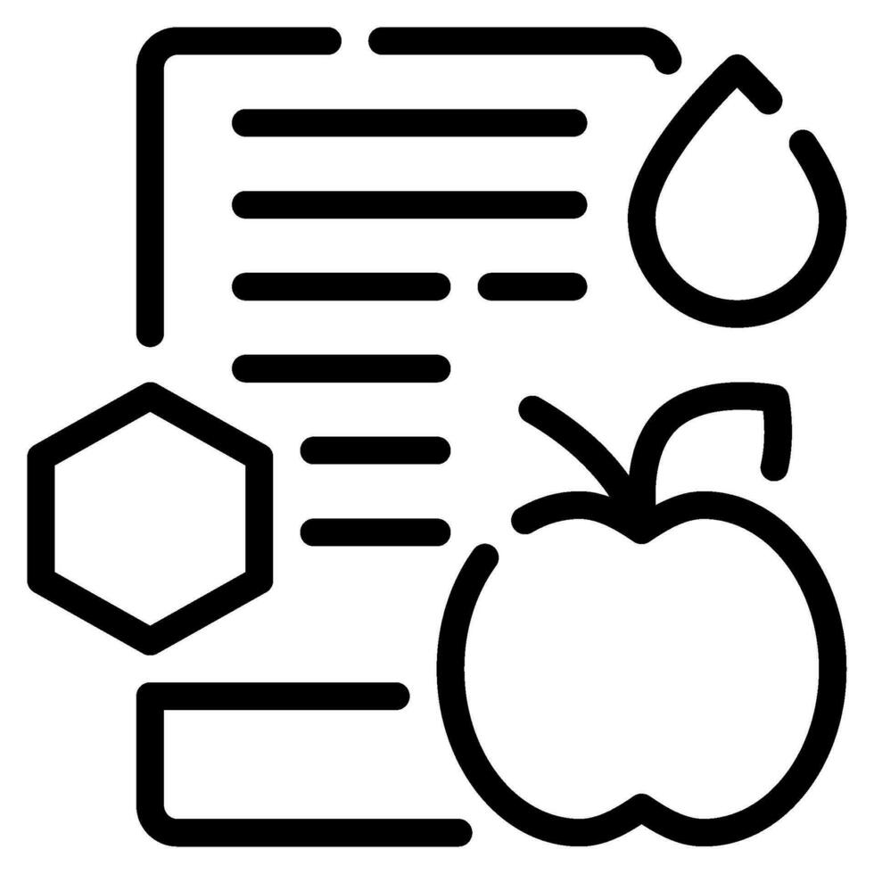
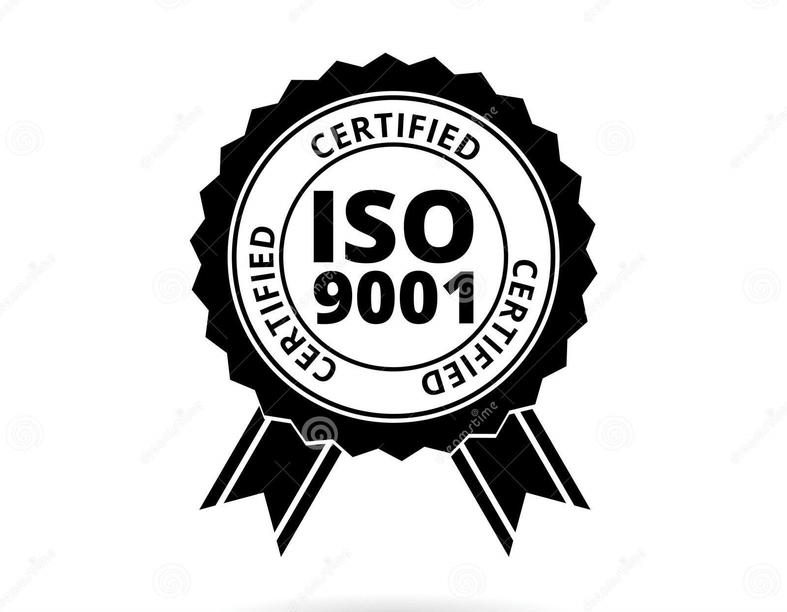
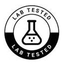

Sobre Nosotros
Somos chingones, apoco no?
Somos chingones, apoco no?
Para asegurar tu bienestar, todos los laboratorios y suplementos en nuestro catálogo deben cumplir estrictamente con el marco legal mexicano.

Garantizamos que nuestros socios fabricantes operen bajo estrictas prácticas de higiene, asegurando productos libres de contaminación durante toda su elaboración.

Exigimos información clara y veraz en cada empaque. Solo distribuimos productos con tablas nutricionales y sellos de advertencia visibles que te permitan elegir con confianza.

Validamos que los suplementos respeten los límites permitidos de vitaminas y minerales, asegurando que las modificaciones nutricionales sean seguras para tu salud.

Priorizamos laboratorios con sistemas de gestión de calidad internacional, lo que traduce procesos controlados en resultados constantes y confiables para ti.

Solo comercializamos marcas que cuentan con su Aviso de Funcionamiento vigente y que respetan la Ley General de Salud, evitando promesas falsas o productos fuera de norma.